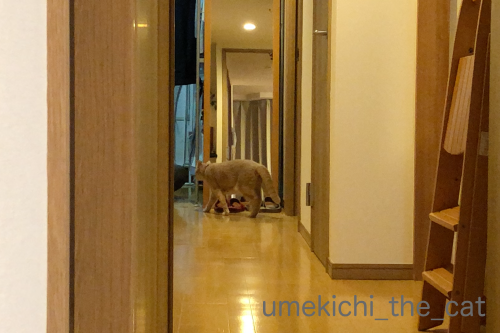
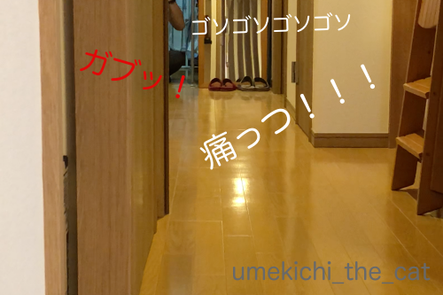

トイレ掃除は、よーいドン！ [梅吉]
梅吉さんがいそいそと奥の部屋に消えていきます。

やがて

何事か起きた様子。
奥の部屋にちらりと見えている腕はおっとです。
一体なにが起きているかと言うと・・・・
梅吉はおっとが梅吉のトイレ掃除をすると大喜びの大興奮！
ガサガサ猫砂を掘り返し始めると走ってトイレの部屋に行き掃除の様子を監視。
興奮が極まると掃除しているおっとの背中や腕をガブっとするんです (⌒_⌒;
私が掃除したってしらんぷり、全くの平常心なのに。
そしてトイレ掃除が終わると・・・・・
（24秒です。おっとのばたばた走る音がします）
男子廊下５メートル走 家庭内決勝！
時々梅吉が我に返ってアホらし、と言う顔をしますが楽しそうなふたりですwww

完走のご褒美は足タックル。

疲れた体はお膝でまったり。

うっとり♡
梅吉を膝から降ろそうとすると激しい抵抗にあってまたガブ！
このふたり仲が良いんだかなんなんだか良く分かりませんwwwww
我が家の行きつけの植物園、台風の被害が大きくてしばらく閉園していたのですが
ようやく開園しました。
秋バラの季節。
背の低いものは無事でしたが葉っぱが風で焼けたようになったものが多かったです。
背の高いものは枝が折れてしまったものがたくさんありました。
ハナミズキは例年通りたくさん赤い実をつけていました。
こちらは塩害で咲いてしまったソメイヨシノではなく
この時期ならではのジュウガツザクラ。
来春のお花見、木が倒れてしまったり塩害で今咲いているソメイヨシノが咲かなかったり
例年とは違ったものになりそうですね。

カフェオレ色の梅吉

梅吉 2023年8月10日 永眠


梅吉と出会った譲渡会

犬猫の理由なき殺処分ゼロ
妄想広告
UMEKICHI 光

爆発的に早い！
時々攻撃的！
Thanks to Mr.Boss365
爆発的に早い！
時々攻撃的！
Thanks to Mr.Boss365

動画めちゃめちゃ楽しそうだわｗｗ
おふたりがどんな顔で走っているかを想像して
にやにやしましたｗｗｗ
by リュカ (2018-10-25 14:47)
こんにちは。
失礼かと思いますが・・・
この家族？面白すぎて「涙が出ちゃう。だって梅吉君なんだもん」！！
アタックナンバーニャンです。ツボにはまりました。
ドラフト会議そろそろ始まります。梅吉君にクジ引きして欲しい。
壊れかけいるので、一時撤収です？(=^･ｪ･^=)
by Boss365 (2018-10-25 15:42)
まさに恒例行事（笑
これをやらなくっちゃ梅吉さんじゃない？？
お二人さんがとても可愛過ぎますね(#^.^#)
by きぃ (2018-10-25 16:56)
毎回走るんですね~。おとーさんも頑張ってますね。仲がいいんですよ~。
by zombiekong (2018-10-25 17:18)
2人の競争動画は最高ですね。
梅吉さん、真剣勝負してますね。
全速力で走ってます。
おとーさんは、
嬉しそうに大きな口を開けて笑いながら走っていると想像しました（笑）
最後、『おとーさん、あほやな』のテロップに、ちぃさんの笑い声！
突如、走らなくなった梅吉さん、見つめる姿が大人らしい（笑）
by kiki (2018-10-25 20:49)
梅吉さん、腕の中でほっこりですね！
お父さんと一緒に競争ですね(^^)
by ma2ma2 (2018-10-25 21:35)
梅吉さん、おっと様のことを友達と思っているのかな？^^;
靴下履いて走って、ずっこけないようにー。
by yes_hama (2018-10-25 21:58)
廊下で徒競走？楽しそうだニャ～（ﾟ□ﾟ）
by 英ちゃん (2018-10-25 23:25)
お父さんが大好きなのでしょうねぇ。
いつも一緒に居たいんだろうなぁ＾＾
by ぽちの輔 (2018-10-26 06:23)
梅吉さん、たのしんでますにゃあ^^
by ニコニコファイト (2018-10-26 07:14)
動画笑える〜(≧∀≦)
一家に愛があふれてて、眩しいくらいです。
by よーちゃん (2018-10-26 09:44)
楽しそう～♪
映っていないおとーさんの満面の笑顔を見えるようです(#^^#)
梅吉さん、おとーさん放置はやめてあげて～。
テンション上がって走ってるのは私だけ、我が家でも頻発しますが、ものすごく恥ずかしくて寂しいからね～^^;
お花がキレイな公園も台風被害でまだ立入禁止のエリアがあったりしますね。ホントにあの台風はすごかった・・・。
by ゆきち (2018-10-26 12:06)
お父さんも梅吉さんもとっても楽しそう＾＾
２人の毎日のコミュニケーションの１つなんですねぇ(^O^)
って、梅吉さん途中で冷静になるのはやめてあげてｗ
うちは追いかけるのは私で、かみさんに言わせると
にゃんずは楽しそうではなく必死の形相で逃げてるそうです(*_*)
by ニッキー (2018-10-26 12:43)
めちゃ楽しそう～！
いそいそと行くところから、ガブッて一緒に徒競走ー♪
仲いいですよ～＾＾
梅吉さん‥しらけるのはやめてあげて＾＾；
公園の薔薇、きれいですね～。木の実も赤くなる季節‥
来年は枝ぶりが変わってるところもありますね。
by sana (2018-10-26 14:47)
梅吉さん、追いかけっこ楽しそうですね(^^)
うちの猫はもう居ないですが、もっと遊んであげれば良かったかな～なんて思ってます。
by kou (2018-10-26 17:07)
此れ、梅しごと。
追いかけっこ、かわいい♡
甘えっ子の姿もたまりませんね（*´∀｀*）
我が家も、ちゃーが追いかけてきますが
そのまま追い越されていくことしばしばです。（猪突猛進なので）
ちなみに先代は、母が風呂に入るので服を脱ぐと
直ちに噛みに行ってました^^;（いつも悲鳴が・・・）
植物園は、秋でも楽しめますね。冬の枯れ木、好きです(｡-_-｡)
by Ja-Kou66 (2018-10-27 00:37)
男子ふたり、めちゃ楽しそうですにゃあ(^.^)
オトコはオトコ同士、特別な友愛があるのかしらね♪
by のらん (2018-10-27 07:59)
なんか楽しそうだなぁ(*^^*)
by palpal (2018-10-27 10:09)
こんな決勝戦が日々行われていたとは！！
ふっと手を抜いてお父さんに花を持たせる梅吉しゃまは大人じゃーん！！(*≧∀≦*)
一枚上手ですなぁ〜♪
そして「わしを愛でるんや〜」と至福のお膝…やっぱり仲良しさんなんですって！！
by くつしたにゃん (2018-10-27 18:52)
パタパタ・チリンチリン競争楽しそうですね。
あれ？追いかけてくれないとちょっと残念^m^
by ふにゃいの (2018-10-28 17:33)
これは楽しい(≧▽≦)
人の楽しい気持ちはにゃんこにも伝わりますから梅吉くんもうれしそう。
おとーさんがトイレ掃除のあと遊んでくれるってわかっているのよね。
早く！早く～！のガブｗ
遊び疲れてお膝で甘える姿に、おとーさんと梅吉くんの関係がみえますね。
仲良しさんです(*^-^*)
by emi (2018-10-28 22:19)
動画拝見しました！
面白いーー。
ウチは猫同士でしか追いかけっこしないので
梅さまとご主人の追いかけっこ羨ましいです^ ^
by ryang (2018-10-28 23:57)
リュカさん＞
とっても楽しそうでしょ♪
私とは走ってくれないのよねーw
おっとはめちゃ真剣な顔してるんですよ・・・
それがまたなんというか平和な感じですwww
Boss365さん＞
ツボに入っちゃいましたか！
外出先での思い出し笑いご注意くださいねw
私は時々しちゃいます。もちろん梅吉のあれこれで・・・
来シーズンのに向けてBoss365さんもスカウティング開始でしょうか。
でももちろん一位指名はすももちゃんですよね！！
ボスママさんと競合！？
きぃさん＞
梅吉が一緒に走ってくれないとおっとがとっても残念そうな顔しますよw
もちろん期待をしてみている私も（笑）
楽しそうに走っているふたりを見て
ああ、我が家は今日も平和だなぁなんて思ったりして ( ´艸｀)
zombiekongさん＞
最近は走るパターンから待ち伏せパターンに変化しつつあるのですが・・・
トイレ掃除後なにかしら絡んでいくのは間違いないのですwww
「優秀な下僕＆遊び相手と認められてうれしい。」
とおっとは申しておりますwww
kikiさん＞
さすがkikiさん、真剣勝負を見抜いていらっしゃる・・・
おっと、めちゃめちゃ真剣な顔して走ってますw
小学校の徒競走はこんな顔して走ってたんだろうなぁって
想像できるくらいにwww
で、ゴールの瞬間（笑）にとっても嬉しそうな顔になるんですよ(*>艸<)
いい歳して何やってるんでしょうね、アホ夫婦はw
大人の梅吉が眩しい・・・
ma2ma2さん＞
家の中で毎日大運動会でーす＾＾
で、走った後はちゃんとケアも付いていて・・・
梅吉毎日極楽ですwww
yes_hamaさん＞
おとーさんであり、下僕であり、友達であり・・・
関係が難しいなぁ・・・と時々おっとが申しております( ´艸｀)
靴下！本当ですね！！
もう若くないし気をつけなければwwwずっこけそう！
英ちゃんさん＞
はい＾＾我が家は大運動会会場です！
楽しそうだけど真剣勝負でもあるんですよ(*>艸<)
ぽちの輔さん＞
間違いなく大好きですね！
でも私とは接し方が違う・・・
いつも一緒に＝良いように使いたいって感じ！？（爆）
ニコニコファイトさん＞
梅吉もですがおっともめちゃめちゃ楽しんでますよ＾＾
よーちゃん＞
梅吉への愛は溢れ出て困るくらいですからっ0(≧▽≦)0
動画、おっとの真剣な顔をお見せできなくて残念です( ´艸｀)
ゆきちさん＞
ゴール後は満面の笑みになりますが
レース中（笑）はそれは真剣な顔して走っているんですよ！
仕事中よりも真剣かもしれません(*>艸<)
それだけに梅吉に放置された時の残念がりようったらありませんwww
立ち入り禁止エリア、本当に多いですね。
黒x黄色のテープが張り巡らせてあると以前は何事！？
と思いましたが今はびっくりしなくなってしまいました・・・
ニッキーさん＞
漢同士は勝負を通じてコミュニケーションを図るのでしょうか・・・
それは邪魔しちゃいけないですね！
やっぱり私は一観客として楽しむことにします(๑˃̵ᴗ˂̵)و
（ちょっと参加したかったw）
必死の形相！？それは真の意味での真剣勝負ですね！！
にゃんずのみなさんもニッキーさんもがんばれ〜www
sanaさん＞
間違いなく仲良しです＾＾
喧嘩するほど仲が良いって感じでしょうか( ´艸｀)
それだけに放置されるのは辛いですよねーw
がぶってされる方が嬉しいようですよ(≧▽≦)
公園の木々の変わり様にはびっくりします・・・
やっと手の入り始めた公園などは
枝が切り落とされてすかすかになって寂しい限りです。。。
kouさん＞
追いかけっこ、私とはあまりしてくれないのですが
見ているととっても楽しそうですよ。
梅吉の目がキラキラしちゃって・・・
おいかけっこは怖がっちゃう子もいるかもしれませんね。
梅吉はアグレッシブな遊びは大歓迎なんですけど(≧▽≦)
Ja-Kou66さん＞
梅吉、まいにち良い仕事をしてくれます！
さらに進化を求める漢なので（笑）
最近は追いかけっこに続いて待ち伏せバージョンも楽しんでおりますw
猪突猛進型はちゃーくんと一緒です！
追いかけっこが追い抜き競争になり
そのうち一人で爆走し始めて「走ること」が目的に・・・・(*>艸<)
枯れ木、わかります。
葉が生い茂り過ぎていると妙な圧迫感が・・・
（これはこれで良い時もあるのですが）
枯れ木のすか〜っとした感じは清々しいです＾＾
のらんさん＞
オトコ同士、やっぱり私は立ち入らない方が良いですねw
最近お風呂でもオトコ同士の会話してるんですよ ( ´艸｀)
palpalさん＞
とっても楽しそうでしょ♪
実際に見ているとめっちゃ笑えますwww
くつしたにゃんさん＞
我が家は日々真剣勝負の四角いリングなんですよ！
間違いなく仲良しさんなんですが
だからこそ競争心も芽生えるんでしょうかw
おっとが手を伸ばすと0.1秒くらいでがぶ！
そして新たなバトルが始まるのです・・・
ふにゃいのさん＞
梅吉の鈴の音がとっても楽しげに響き渡ります＾＾
おっとは毎回楽しみにしているのですが
時々追いかけてくれないのですよ・・・
日々変化があった方が面白いと
梅吉なりの遊び心なんでしょうか(*>艸<)
emiさん＞
そうなんですよね！
どうぶつの方が人の気持ちを読み取ることに長けているのか
（かといってにゃんこの場合は忖度は無しですがw）
真剣に楽しく遊ばないと「つまんない」って顔しますよね！！
トイレ掃除が遊びの合図って変な合図だけど
楽しければそれでよし、ですよね(^_－)☆
でもなんでトイレ掃除するおっとに興奮するんだろう・・・(*>艸<)
そこの所はどうしても理解できないwww
ryangさん＞
かけっこ動画楽しそうでしょう！？( ´艸｀)
普通は猫同士でしますよねぇ・・・
梅吉はおっとのこと「でっかいねこ」ぐらいに
思ってるのでしょうかwww
by ちぃ (2018-10-29 14:10)